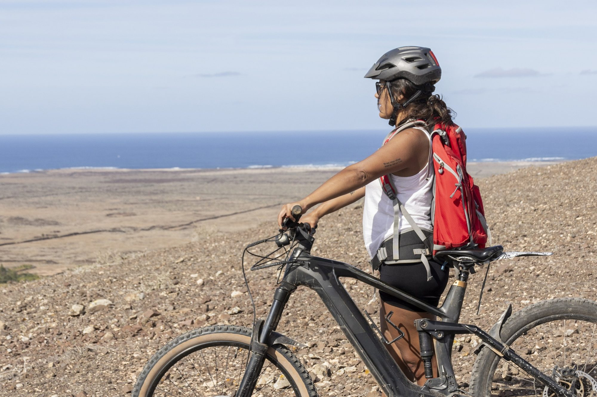
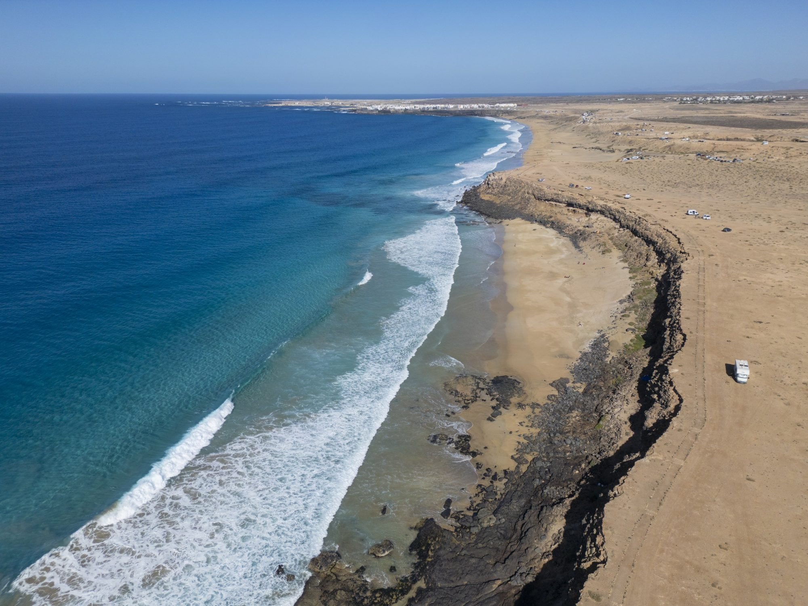
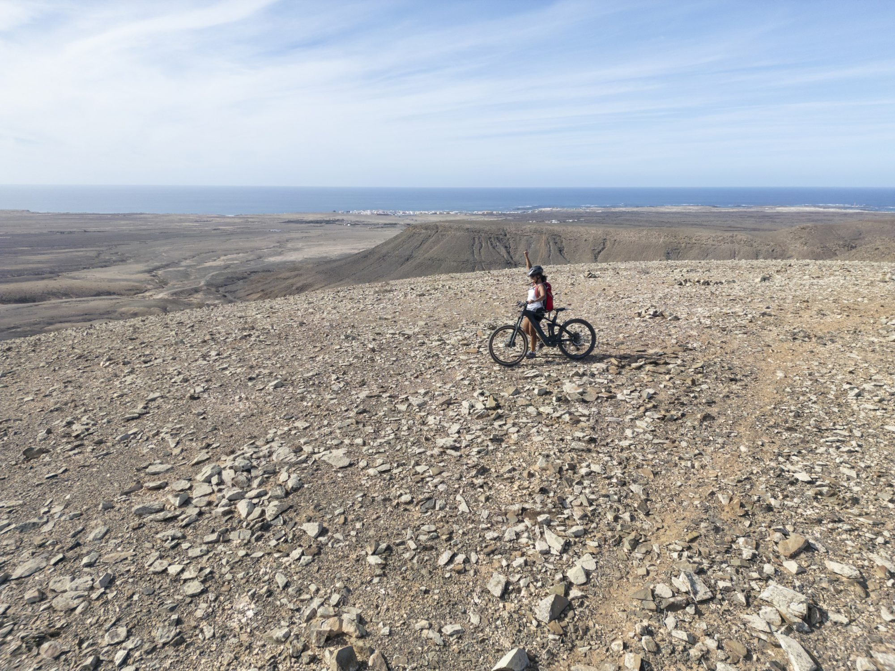
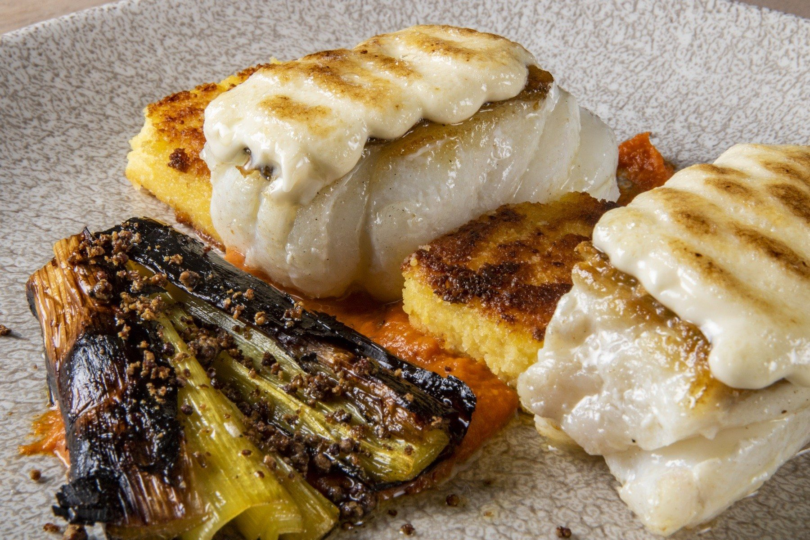

MICHELANGELO IBERIAN TRAVEL × JUAN AIZPURU
Journeys made
to be shared.
Photography and film for your active, cultural and gastronomic journeys across Spain, Portugal and beyond.
EXPLORE THE PROPOSAL ↘JUAN AIZPURU · SELECTED PORTFOLIO
A PROPOSAL FOR MICHELANGELO
Give your partners
the full picture.
Your team designs the itineraries. Strong visual material helps travel professionals understand what makes each experience worth offering.
I propose travelling with your local guides and production partners to create photography and film around the tours you want to promote—from cycling and hiking to local food and cultural experiences.
Your team can use the resulting collection in its own sales and marketing, or work with me and my team to create a complete campaign. The destinations and production time are shaped around your needs.
EXPLORE THE COLLABORATION ↗
LANDSCAPE · EXPERIENCE · LOCAL PEOPLE
Show the place.
Show the experience.
CREATED AROUND YOUR PROGRAMMES
Material for the journeys
you want to sell.
We choose the routes and audiences together, then produce visual material your team can put to work across its own channels.
01ACTIVO: cycling and hiking+
Show the movement, landscapes and practical experience behind your active group programmes, from cycling routes in Mallorca to coastal walks in the Algarve or volcanic trails in the Canary Islands. Specific itineraries are agreed with your team.
02GUSTO: people, food and local producers+
Photograph and film the people and details behind your food and wine experiences: markets, regional producers, tastings and the moments shared by the group.
03Cultural journeys across Iberia+
Create images around the cities, countryside and local stories in your itineraries, including routes in northern Spain and the Basque Country, where I am based.
04A visual collection or a complete campaign+
Provide a flexible collection for your team’s itineraries, website and travel-trade presentations, or develop a complete campaign with us. Scope, delivery and usage rights are agreed before production.
SELECTED WORK
Made for movement.
Rooted in place.
These are Juan Aizpuru’s photographs from previous assignments. They illustrate the visual approach; the proposed production would be planned around Michelangelo’s own routes and clients.


HOW WE WORK
Your routes.
A shared brief.
We start by choosing the programmes, markets and uses you want to prioritise. Together we develop a practical plan with your guides, partners and local production team.
The work can cover a single route or several destinations over the time the project needs. Production responsibilities, final materials and usage rights are agreed in advance.
Juan retains ownership of the original material.
ABOUT JUAN AIZPURU
A personal eye.
A professional team.
I’m Juan Aizpuru, a photographer and filmmaker based in Bilbao. I have extensive experience photographing outdoor sports and travel, and spent ten years living in Switzerland.
I work with local collaborators and can bring a production crew when a project calls for it.
EXPLORE MY WORK ↗Based in Bilbao.
Working wherever the story leads.
FITUR 2027 · MADRID
Let’s plan your
next visual journey.
I would love to hear which programmes and markets matter most to your team and discuss how we could support them.
VIEW MY PORTFOLIO ↗Michelangelo Iberian Travel · Stand 4F12, Pavilion 4